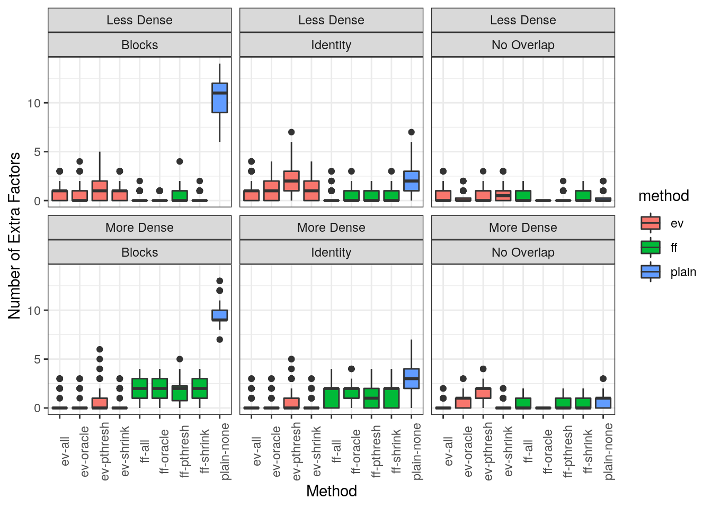
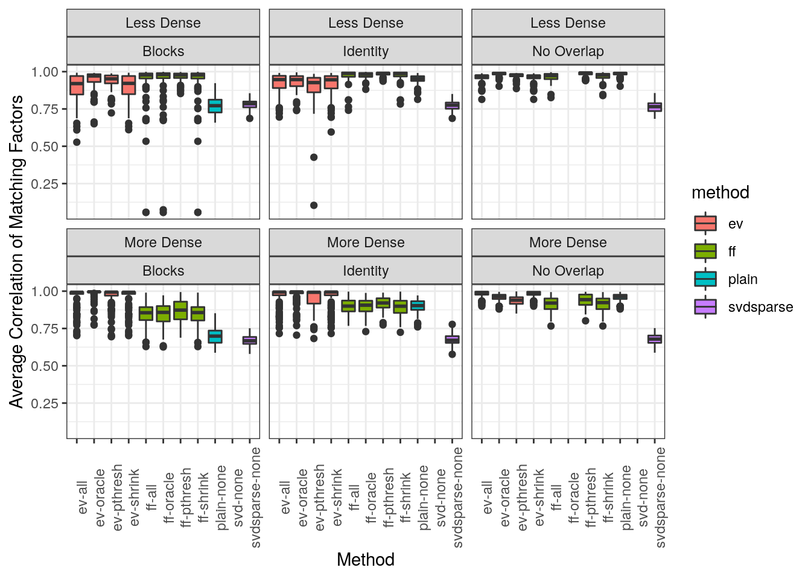
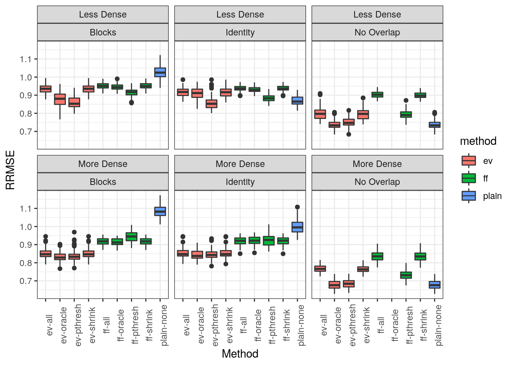

Simulations October 2, 2020
Jean Morrison
2020-10-06
Last updated: 2020-10-06
Checks: 7 0
Knit directory: sumstatFactors/
This reproducible R Markdown analysis was created with workflowr (version 1.6.2). The Checks tab describes the reproducibility checks that were applied when the results were created. The Past versions tab lists the development history.
Great! Since the R Markdown file has been committed to the Git repository, you know the exact version of the code that produced these results.
Great job! The global environment was empty. Objects defined in the global environment can affect the analysis in your R Markdown file in unknown ways. For reproduciblity it’s best to always run the code in an empty environment.
The command set.seed(20190819) was run prior to running the code in the R Markdown file. Setting a seed ensures that any results that rely on randomness, e.g. subsampling or permutations, are reproducible.
Great job! Recording the operating system, R version, and package versions is critical for reproducibility.
Nice! There were no cached chunks for this analysis, so you can be confident that you successfully produced the results during this run.
Great job! Using relative paths to the files within your workflowr project makes it easier to run your code on other machines.
Great! You are using Git for version control. Tracking code development and connecting the code version to the results is critical for reproducibility.
The results in this page were generated with repository version 090fbaf. See the Past versions tab to see a history of the changes made to the R Markdown and HTML files.
Note that you need to be careful to ensure that all relevant files for the analysis have been committed to Git prior to generating the results (you can use wflow_publish or wflow_git_commit). workflowr only checks the R Markdown file, but you know if there are other scripts or data files that it depends on. Below is the status of the Git repository when the results were generated:
Ignored files:
Ignored: .Rhistory
Ignored: .Rproj.user/
Ignored: analysis/fixed_factors2_cache/
Ignored: analysis/fixed_factors_cache/
Ignored: analysis/metabo_flash_experiments_cache/
Ignored: analysis/pathway_factors_cache/
Ignored: analysis/simulations_cache/
Ignored: analysis/z_scores_cache/
Ignored: analysis_data/2020-06-10_ai/
Ignored: analysis_data/simple_patterns/
Ignored: analysis_data/sims_medium_k/
Untracked files:
Untracked: analysis/sample_corr2.Rmd
Untracked: buttons.css
Untracked: bw_factors2.png
Untracked: code/hide_output.js
Untracked: k99_analysis.R
Untracked: k99_fit.RDS
Untracked: matrix_20.png
Unstaged changes:
Modified: analysis/k_greater_than_n.Rmd
Note that any generated files, e.g. HTML, png, CSS, etc., are not included in this status report because it is ok for generated content to have uncommitted changes.
These are the previous versions of the repository in which changes were made to the R Markdown (analysis/sims_medium_k.rmd) and HTML (public/sims_medium_k.html) files. If you’ve configured a remote Git repository (see ?wflow_git_remote), click on the hyperlinks in the table below to view the files as they were in that past version.
| File | Version | Author | Date | Message |
|---|---|---|---|---|
| Rmd | 090fbaf | Jean Morrison | 2020-10-06 | wflow_publish(c(“analysis/sims_medium_k.rmd”, “analysis/index.Rmd”)) |
Introduction
This is a summary of simulations I ran doing basic comparisons of different methods for estimationg R, different methods for correcting for sample overlap and comparing to some simple SVD based methods.
Simulation set up
The simulations have these features:
- No missing data.
- There are always 30 traits, 12 factors, and 10,000 variants.
- For each simulated data set \(L\) and \(F\) are generated randomly (details below). There are two modes of generating \(F\) one of which has more dense factors than the other. I will call these “denser” and “less dense” later.
- We also randomly generate
- heritability of each trait (\(h^2_{trait}\))
- proportion of each traits heritability that comes from \(LF^\top\) (\(\omega\))
- heritability of each factor (\(h^2_{factor}\))
- GWAS samples are either entirely overlapping or entirely non-overlapping.
- If the GWAS are overlapping, the envrionmental correlation is either the identity or block diagonal with 10 3 by 3 blocks that are 0.7 on the off diagonal on 1 on the diagonal.
- \(\Theta\) is sparse (counter to FLASH assumptions) with a proportion 0.1 of elements non-zero.
- \(L\) is also sparse and has 0.2 of its elements non-zero.
- Sample size is 10,000.
Generating \(F\)
\(F\) is generated using the following procedure. We first generated the number of non-zero elements in each factor. In the “less dense” mode this is generated as pmin(rpois(nfactor, 2) + 2), ntrait). In the “denser” mode, the first three factors are dense (all 30 traits are non-zero) and the rest are drawn from the same poisson distribution plus 2 as used in the less dense mode. Then the non-zero elements of each column are selected at random and their value is sampled from a \(U(-1, 1)\) distribution. Later the rows of \(F\) are scaled to yield the desired heritability.
Note that all factors here affect at least two traits. This is because a single trait factor is not that interesting. Since \(\Theta\) is sparse, these effects represent single trait factors for all traits.
It is possible using this scheme that some trait may not have any factor effects. In this case, the element of \(\omega\) corresponding to that trait is set to zero.
Generating other paramters
\(h^2_{trait}\) is sampled from a \(U(0.1, 0.6)\) distribution. \(\omega\) is sampled from a \(U(0.5, 1)\) distribution, \(h^2_{factor}\) is sampled from a \(U(0.5, 1)\) distribution. On occaision we may sample an impossible combination.
Simulating data
Data are simulated using the sim_sumstats_lf function in this package which is now able to randomly generate \(F\) if it is not provided. Occaisionally we generate an \(F\) that is impossible with the given parameters and then we just throw it out and try again. This happens if the heritability of a trait is high but the heritability of the factor(s) contributing to it is low.
Estimation strategies
I examined the following estimation strategies:
flashierwith no adjustement for sample overlap (fit_plainin this package)flashierwith fixed factors (fit_ff)flashierwith eigenvector transformation (fit_ev)- SVD on z-scores
- “sparse SVD” in which z-scores less than 4 are set to zero and then SVD is run
For the two methods accounting for sample overlap I considered three strategies to estimated \(R\) (correlation of rows of \(E\)):
- Oracle: Use exactly the matrix that was used to generate the data
- All: Estimate \(R\) as the correlation of effect estimates ver all variants.
- \(p\)-threshold: Estimate \(R\) only using variants with \(p > 0.2\). This is done element-wise and different variants may be used to estimate different elements of \(R\).
- Shrinkage: Using
cor.shrinkfrom thecorpcorpackage which tries to adaptively shrink the correlation towards \(I\).
Evaluation Metrics
We evaluate (see below for details):
- Number of factors accurately recovered.
- Average correlation between estimated factors and best matching factors.
- Number of extra factors estimated.
- RRMSE estimating the true effects.
Factor discovery
I defined factor \(j\) in the true matrix \(F\) as “discovered” by factor \(i\) in an estimated matrix \(\hat{F}\) if:
- \(cor(F_j, \hat{F}_i) > cor(F_{j^\prime}), \hat{F}_i)\ \forall j^\prime \neq j\)
- \(cor(F_j, \hat{F}_i) > cor(F_{j}), \hat{F}_{i^\prime})\ \forall i^\prime \neq i\)
- \(cor(F_j, \hat{F}_i) > \lambda\) (in results shown \(\lambda = 0.9\))
I say that a true factor and an estimated factor match if they satisfy the first two conditions. An estimated factor is “extra” if 1) it doesn’t satisfy the above criteria for any \(j\) and 2) it doesn’t have correlation greater than \(\tilde{\lambda} = 0.95\)) with any single trait factors. This means we don’t penalize methods that discover single trait factors.
The RRMSE for an estimate \(\hat{B}\) is defined as \[\sqrt{ \frac{\sum_{ij}(\hat{B}_{ij}-B_{ij})^2}{\sum_{ij}B_{ij}^2}}\]
Results
In the following plots, methods are listed as ff-pthresh indicates the fixed factor method with R estimated by \(p\)-value thresholding.
Factor Discovery
Attaching package: 'dplyr'The following objects are masked from 'package:stats':
filter, lagThe following objects are masked from 'package:base':
intersect, setdiff, setequal, union
Things to notice:
- plain svd and sparse svd perform worse than
flashier. Plain SVD does terribly. - Among methods correcting for sample overlap (
fit_evandfit_ff) the \(p\)-threshold \(R\) estimate is the best non-oracle estimate of \(R\) and sometimes outperforms the oracle. - The fixed factor correction using the \(p\)-thresholded \(R\) estimate is always one of the best methods and doesn’t seem to be a sacrifice compared to
fit_plaineven when there is no sample overlap.
Extra factors
I am leaving out the SVD methods since I didn’t implement any strategy for selecting the top vectors.

Note that the unadjusted method generates a lot of extra factors when there is sample overlap. In the more dense settings the fixed factor method generates more extra factors than the eigenvector method.
Correlation of matching factors
Warning: Removed 801 rows containing non-finite values (stat_boxplot).
The fixed factor method does better than the eigenvector method in the less dense setting and worse in the more dense setting. Both beat the unadjusted method in the Blocks scenario. Everything beats the svdsparse method. Data for svd is missing because it doesn’t match the true factors often enough.
RRMSE
I only computed RRMSE for the flashier based methods.
Warning: Removed 201 rows containing non-finite values (stat_boxplot).
The eigenvector methods generally always have the best RRMSE with the \(p\)-thresholding correlation matrix giving the best results.
sessionInfo()R version 4.0.2 (2020-06-22)
Platform: x86_64-pc-linux-gnu (64-bit)
Running under: Ubuntu 18.04.5 LTS
Matrix products: default
BLAS: /usr/lib/x86_64-linux-gnu/openblas/libblas.so.3
LAPACK: /usr/lib/x86_64-linux-gnu/libopenblasp-r0.2.20.so
locale:
[1] LC_CTYPE=en_US.UTF-8 LC_NUMERIC=C
[3] LC_TIME=en_US.UTF-8 LC_COLLATE=en_US.UTF-8
[5] LC_MONETARY=en_US.UTF-8 LC_MESSAGES=en_US.UTF-8
[7] LC_PAPER=en_US.UTF-8 LC_NAME=C
[9] LC_ADDRESS=C LC_TELEPHONE=C
[11] LC_MEASUREMENT=en_US.UTF-8 LC_IDENTIFICATION=C
attached base packages:
[1] stats graphics grDevices utils datasets methods base
other attached packages:
[1] ggplot2_3.3.2 dplyr_1.0.2 workflowr_1.6.2
loaded via a namespace (and not attached):
[1] Rcpp_1.0.5 pillar_1.4.6 compiler_4.0.2 later_1.1.0.1
[5] git2r_0.27.1 tools_4.0.2 digest_0.6.25 evaluate_0.14
[9] lifecycle_0.2.0 tibble_3.0.3 gtable_0.3.0 pkgconfig_2.0.3
[13] rlang_0.4.7 rstudioapi_0.11 yaml_2.2.1 xfun_0.18
[17] withr_2.3.0 stringr_1.4.0 knitr_1.30 generics_0.0.2
[21] fs_1.5.0 vctrs_0.3.4 rprojroot_1.3-2 grid_4.0.2
[25] tidyselect_1.1.0 glue_1.4.2 R6_2.4.1 rmarkdown_2.3
[29] farver_2.0.3 purrr_0.3.4 magrittr_1.5 whisker_0.4
[33] backports_1.1.10 scales_1.1.1 promises_1.1.1 ellipsis_0.3.1
[37] htmltools_0.5.0 colorspace_1.4-1 httpuv_1.5.4 labeling_0.3
[41] stringi_1.5.3 munsell_0.5.0 crayon_1.3.4